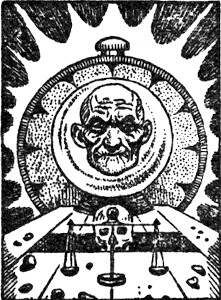
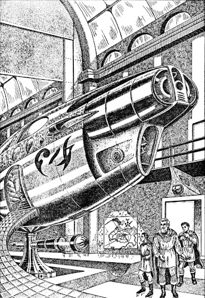

[Transcriber's Note: This etext was produced from
Startling Stories, March 1948.
Extensive research did not uncover any evidence that
the U.S. copyright on this publication was renewed.]

Harley D. Haworth had been a doughty warrior in the American manner. Many a powerful Wall Street foe had bowed to his strength and thousands of innocent victims had cursed his name. But that was many a misty year ago.
Now even his son was an aged philanthropist and H.D. himself was relegated almost to legend. But at ninety-two the old battler was locked in his most desperate struggle, vainly trying with his failing strength to beat off the grimmest, most relentless of all antagonists.
If the man in the street ever heeded or mentioned this struggle, it was to disinter a corny, dog-in-the-manger joke.
"Old Harley D. Haworth," he would say patronizingly, "is such a guy—if he can't take it with him, he just don't go."
But he was going all right, battle by battle, losing his war. Not that his forces were small—two billion greenbacked stalwarts comprised his army. The resources of the planet were his. Only his generals, the world's fanciest physicians, were incompetent to maneuver these forces to advantage.
They gave him gland extracts, they gave him vitamins, they gave him blood transfusions. They gave him false teeth, eyeglasses, arch-supports. They cut out his varicose veins, his appendix, one of his kidneys. And in the end the learned doctors held a conference and this was the sum of their wisdom—eat crackers-and-milk.
At this juncture there was a shake-up in the high command. The new Chief of Staff was not a physician but an engineer named Jones.
"What man can imagine, man can do." So runs the optimistic saw. The boy, Garibaldi Jones, had had firm faith in said saw, and imagined himself a great lawyer and famous statesman. With the passage of time, however, there gradually came to Garibaldi, as to many another before and since, the suspicion whoever said that was kidding.
Now Baldy Jones had long since conceded that his imagination, at least, far outran his capabilities. He had settled down, when he realized he lacked the persuasive gift, to being a reasonably competent mechanical engineer.
An ordinary slip-stick jockey, that was the work-a-day Jones. But sometimes, on a Sunday, Jones the general-statesman-scientist-prophet-and-all-around-wiseacre would hold forth from his armchair on life, love, art, literature, science, religion, politics and various other manifestations of nature that are dignified by names.
On a certain portentous Sunday in the summer of 1947, about the time the doctors were prescribing crackers-and-milk as a specific for senile debility, Garry had found a particularly depressing article in his Supplement. Goodwife Nancy was relaxed with the Women's Section.
Garry wiped the perspiration from his gleaming head of skin and proceeded to her instruction.
"Listen, dear, it says here some scientist thinks the human race is going to be wiped out. It's too dumb to survive, or too smart. I think that's crazy but he's got a lot of points. Listen, he says—
"'To date there has been no indication whatever of any barrier to the indefinite extension of the frontiers of science. It is breath-taking to think what this means. It means that so far as we know the scientific method is capable of carrying humanity to any conceivable heights and beyond.'"
"Garry, stop talking so loud and let me read this, 'Fun With Fish—Hints for the Hurried Housewife.' You're always saying, 'Give me something different.' Science. What do I know about science?"
"You should know something beyond the kitchen. Listen—'But reflection turns hope to alarm, with this thought—In the vast and ancient universe surely some races must have had time already to attain godlike power and yet they have not manifested themselves. Many answers are offered to this riddle, but none very satisfactory.'"
"Garry, will you be quiet?"
Nancy's question was sharp. "I will not," said Garry. "'One answer is that our civilization is very young, and the hypothetical super-civilization somewhere just hasn't found us yet. But that is a contradiction in terms, because it takes most of the "super" out of the super-civilization, considering that a technological culture advances on an exponential curve.'"
"Garry, are you going to let me read in peace?"
"I am not," said Garry. "'Another is that a super-civilization would have advanced beyond any concern about us or our petty problems. This is an uneasy possibility, but rather thin for this reason—
"'From all indications our mastery of the physical world is proceeding much faster than our mental evolution, and while this condition may change I am inclined to think we would be flitting about the galaxy before we would have lost our humanity.'"
"Garibaldi Jones, if you don't stop with that crazy stuff I'll go out of my mind!"
"You will not," said Garry remorselessly. "'We are thus led to the proposition that there is no super-civilization and to the corollary that intelligence, at least technological intelligence, has no survival value. This is a sobering thought, and we ask—
"'Why? Aside from metaphysical hypotheses vain to pursue, there is one outstanding answer. Someone, someday, will find a chain reaction for one of the light elements like oxygen and silicon, or perhaps some other even deadlier agent will be loosed upon the world—for as science progresses more and more power is more and more often concentrated in fewer and fewer hands.'"
"Garry, do you intend to ever stop talking?"
"I do not," said Garry. "'There is, sadly, no indication of an abatement of the spirit of irresponsibility that has kept the world, especially in recent years, in turmoil, at war or in fear of war.
"'The only real remedy, perhaps, is fear of God, but the materialist knows that when he dies his rotting carcass is beyond punishment, beyond hope, beyond recall. Thus the only restraint on beastliness is the ineffectual one of conscience, and in consequence—'"
"Why beyond recall?" interrupted Nancy, surprisingly.
"What?"
"Well, if science can do anything, like he says, why can't they bring the dead people back some day? Now you just read that tripe to yourself, if that 'scientist' knew anything he wouldn't have to write for trashy Sunday Supplements, and let me read in peace, do you hear me?"
"How can I help it?" muttered Garry, who had already conceived the germ of a notion.
The notion grew into an idea, and the idea hardened into a resolve. And in the natural course of events he went to H.D. Haworth with his proposition and there was a meeting of minds.
But a third talent was needed for their project, and the logical candidate was Ellsworth Stevens, M.D., Ph.D.
The seduction of Ellsworth Stevens made a temporary stir in certain lofty circles, shocking all but the most cynical.
A brilliant bio-chemist, a few months previously Stevens had reported some attempts at suspending animation in mammals by a method involving preliminary partial dehydration of the living tissue through starvation, followed by freezing.
The technique exploited the newly-discovered tendency of very minute quantities of radioactive phosphorus in certain phospholipids to counteract the degenerative anti-gelation effect of low temperatures on the colloidal phases of protoplasm.
He had not succeeded in reviving any of the animals, since none of the nerve tissue had lived through the freezing, but results had been nonetheless promising. Now Stevens was employed by the Cancer Institute, consecrated to this most important work.
Until one evening a Tempter called at his modest home. His name, of course, was Jones.
"Dr. Stevens," said Garry, "I want you to quit your job and go back to work on suspended animation."
Stevens blinked rapidly behind his bifocals and smiled deprecatingly.
"Well, Mr. Jones, I could hardly do that. You see, I've been doing some work with radioactive tracers and I'm beginning to get significant results. Can't very well quit now, can I? That other matter isn't very important—I hardly think it could be done, anyway."
"Dr. Stevens," said Garry, "the Cancer Institute doesn't pay you very much. You have a daughter who is getting to the age where she would like to be dressed up. I will give you a ten year contract at ten thousand dollars a years."
"Mr. Jones, do you realize that cancer is responsible for more deaths than any other ailment except heart disease? Maybe I sound sentimental but I actually think of myself as taking an important part in the world's greatest crusade."
"Dr. Stevens, I will give you a ten year contract at one hundred thousand dollars a year."
Blankness in the shy, blinking eyes, then mounting anger. "Look, you, who the heck d'you think you're kidding? If you—"
"Dr. Stevens," Garry said hastily—an enraged sheep is an appalling spectacle—"I have a power of attorney from Harley D. Haworth." Ellsworth Stevens gaped like a fish, and was pure no more.
The Pacific lay stagnant, having decided it was too hot a day to do anything except evaporate. But there was the suggestion of a breeze in the garden and ample shade for three men. The dried-up little old man was speaking, and the big bald man and the lean bespectacled man listened with respectful attention.
"I'm a hard-headed business man, and I'm not easy to fool, as many a smart-aleck's learned, hrumph! It would surprise you the number of quacks that try to sell me miracle water and yoga systems and such-like. Blasted parasites!
"But I know a good investment when I see one," the thin, complaining voice went on, "and you gentlemen have a sound idea." He paused benevolently to let them look gratified.
This is ridiculous, thought Gary, the old boy's a caricature.
"A sound idea—don't depend on these pill-rolling fools that call themselves doctors nowadays to keep you hanging around a year or two more, but just go to sleep in a nice refrigerator until people really know something about the body." He shook a bony forefinger.
"And they'll do it, too. I don't believe in much, but I believe in science. It will take a lot of money, but that's what I've got. And you can have all you need, Mr. Jones, all you need, as I've told you before. Blank check. You came to the right man when you came to H.D. Haworth." He sank back into his nylon deck chair, exhausted by the long speech.
Garry seized the opportunity to air some of his ideas. He was all enthusiasm.
"We'll put the vault in Michigan, Mr. Haworth, not here in California—too many earthquakes. Might be a long time before they know enough about bio-chemistry to revive a dead man and restore his youth. Not that you'll be dead," he amended hastily, "just in a state of suspended animation. I'm sure Dr. Stevens can work that out.
"Anyway, we'd better put the vault in Michigan—very safe country, geologically. We'll make the vault and the coolers of the very best, of course, granite and stainless steel and quartz that will never wear out. And then," he added, coyly, "I have a little idea for a power plant that will be really dependable, if I am the one that says it."
"It better be!" snapped H.D., suddenly ferocious.
"Yes—of course. There's the problem of keeping everything secret but I'm sure we can manage it. The workers won't know what they're doing, Dr. Stevens, and I can do all the really technical work. And there'll be only one trustee each generation to keep his eye on things, starting with me."
Stevens was leaning forward, wearing a somewhat bewildered expression.
"But I thought—but surely after we demonstrate that suspended animation is feasible and we've verified our results, we'll publish?" Seeing the odd-faces the other two were pulling, he repeated plaintively, "I always publish."
H.D. Haworth pronounced a certain four-letter word. Garibaldi Jones cast his eyes to the heavens and tore his hair, coming away empty-handed, of course.
"Well, what's wrong with that?" Stevens snapped, a little color in his face. "Don't the people have a right to know?"
"Young man," quavered H.D., tottering to his feet and shaking the bony forefinger, "what you know about people I could stick in my—"
"Wait a minute, Mr. Haworth," Garry soothed. "Let me explain to Dr. Stevens how it is. Please don't excite yourself. Remember," he coaxed, "we don't want a heart attack now, do we?" The old man collapsed into his chair with a feeble curse.
"Look, Ellsworth, old man," Garry said kindly. "The last thing in the world we want to do is keep anything from humanity. You know Mr. Haworth is the biggest philanthropist in the world. But in this case—well, it's dangerous.
"What do you think would happen if people found out a few rich men were sleeping in quartz coolers while they had nothing but mouldy graves to look forward to? Why, man, they'd tear our vault down with their bare hands!"
H.D. was nodding, muttering something about blasted riff-raff, but Garry saw Stevens' look of contempt.
"But that's not the main thing," he said hastily. "It wouldn't be good for the country—in fact the world couldn't stand it. Once people were convinced, everybody would demand a frigidaire instead of a coffin. Not many could be made and people would plot and steal and kill to get theirs and religious people would fight against it.
"There'd be fakers and stock promotions all over. The nation's economy would be wrecked. People would take their money with them or leave it as savings at compound interest while they slept for a few centuries. Think of the harm it would do, man—think of the people who are happy now, whose lives would be embittered with vain hopes!"
Haworth's head was bobbing on his scrawny neck. "That's right, young fellow, and that ain't the half of it!" He cackled. "Almost like to get a finger in that pie myself.
"The insurance companies would be the ones for it, of course. Twenty-year endowment and, instead of paying you, they pickle you. But it's too risky, too risky—you see that, don't you, my boy?"
Stevens sighed unhappily. "I suppose so," he said, defeated.
"Good, good!" Garry boomed, rubbing his hands briskly. "I knew Dr. Stevens would see the point. He has a head on his shoulders.
"Now, as I was saying, Mr. Haworth, we'll have space in the vault for a hundred or so. That should be enough, I think, but we'll rush yours through first, of course, and have it ready in jig time, just in case.... And after that...."
And so their plans were laid and something new was born under that sun which shone with such ridiculous indiscrimination on H.D. Haworth and on the common people.
According to the outline sketched that afternoon, the vault was to be safeguarded and the sleepers' interests looked after by the establishment of a Haworth Trust, with Garibaldi Jones the first Administrator. Only one person in each generation, the Administrator, would know all about the vault.
Of each generation the Administrator and one or two of his closest relatives would join the ranks of the sleepers. The Administrator's responsibilities and discretion would include all measures necessary for the safety of the sleepers and the trust funds would be ample, to allow for unforeseen future contingencies.
A number of experimental animals closely duplicating H.D.'s condition would be included for the future biologists first to try their skill on—because if Stevens should not perfect a practicable method of suspending animation in time, and H.D. should actually die, his resuscitation would be a ticklish matter.
H.D. did not want to wake up blind, for instance, or with an altered personality—although Stevens, for one, thought any change in the old pirate's personality would be a step in the right direction. The blasted Washington administration wouldn't let a citizen buy radioactives without a lot of busybody questions, but Garry had an idea for a reliable source of power for the coolers.
An improvement on the new "heat pumps," his design dispensed entirely with moving parts, providing a large safety factor. Successfully reversing the refrigeration cycle, the device utilized the heat potential between sub-frost level ground and surface to produce power, using buried coils of a common refrigerant gas.
Caches of treasure were to be tucked away in unlikely places, the key to their location securely hidden in H.D.'s mind. No Tut-ankh-amen he, to invite grave-robbers by foolish ostentation.
And so it came to pass, and H.D.'s last months, despite the physical pain his increasing debilitation caused him, were light-hearted ones.
He was sustained by the bubbling knowledge that he tottered down life's highway toward—not that great, silent abyss that the common folk's imagination called Heaven or Hell and peopled with childish gods and demons anxiously waiting to take him to task for his many "sins"—but merely a bend in the road beyond which lay unknown, but surely friendly, lands.
In course of time Harley D. Haworth was carefully laid away in his ice-cold "coffin," and those who read the obituaries did not suspect that he was the first of men to die a qualified death.
He lay on his back, staring at the white ceiling—it had not occurred to him yet to move. His uncoördinated muscles left his face blank but he was frowning mentally. There was something he wanted to remember, something....
He struggled laboriously to pin down those elusive shapes, but the words wouldn't come. It's hard to think when the words won't come. His eyes sharpened their focus a little and he perceived that he was in bed. Hospital, he thought clearly, I'm in a hospital, of course.
He felt more and more secure now and, after a moment's relaxation, tried again to remember.
A man's voice said clearly, "What am I?"
A feminine voice said pleasantly, "You're a man, and your name is Haworth. Feeling all right?"
Thousands of little relays clicked in H.D.'s brain and he sat up quickly. This room was white and windowless, but it was not the vault in Michigan—and that tall, clear-eyed brownette with the grave eyes and tender lips was certainly not Dr. Stevens.
The man's voice said, "I guess so," and this time H.D. realized that he had spoken. The blood rushed to his head and pounded in his ears, for it had been a strong, young voice.
He ripped away the sheet that covered him, careless of his nakedness, and it was true.
These limbs were firmly rounded, the smooth skin pink with the warm blood coursing beneath. His wildest hopes were realized. He snatched the mirror smilingly proffered him and there it was, that face of youth once lost to faded photographs! Then a great wave swept in with a rush, a roar, a dazzling sparkle of spray.
He emerged from his faint to find the head of his bed elevated, the woman in white holding his wrist to count his pulse. Well, this is it, H.D. thought jubilantly, it actually panned out. I did it, I did it!
Now to plunge into the great adventure—millions of questions to ask, millions of things to do—a new world to conquer. H.D. rubbed his hands briskly together in his habitual getting-down-to-business gesture.
Loosing his hand, the brownette looked up from her watch. Her eyes were dark blue, and....
Bells rang in the back of H.D.'s head, his skin tingled and he forgot what he wanted to say. Her faint, sweet perfume was in his nostrils; a long-forgotten stimulus performed its ancient function. Being a direct man by nature and training, H.D. decided that the shortest distance between two points was to seize this delicious creature. Without more ado he lunged.
But she had stepped back, shaking her head and smiling reprovingly, and H.D. almost fell out of bed. He recovered and collected himself, and laughed to show that he was a good sport.
"Oh, well, more important things to think of now, anyway—or are there more important things? Well, get me some clothes and call the head man around here, and I'll look you up later, Miss...."
"Lorraine, Dr. Lorraine. I'll get you some pajamas—here they are—and you won't see the Supervisor unless you show some pretty unusual symptoms. He's a busy man and I'm a married woman."
H.D. sputtered.
"Now really, Mr. Haworth, I'm not just being mean. You have to stay here under observation for three days as a final check before you're sent to—well, and the supervisor doesn't speak English anyway. I'm the only one here at the hospital that does, which is why I'm here. Now there'll be some nice lunch for you in a few minutes, so relax like a good boy and—"
H.D. exploded. "Young woman," he shouted, "Doctor young woman, as you value your job, I demand to see the person in charge!" He practically foamed. "Boy indeed! I am Harley D. Haworth and I am ninety-four years old—and then some," he added thoughtfully.
"Three hundred and twenty years in the vault and two years we've been working on you," Dr. Lorraine said helpfully.
"Eh? Yes. Well, get me—"
"No," she said very firmly. "You've had enough excitement for the first time in so long. When you've had a nice lunch and a nice nap I'll talk to you again, although you won't really find out very much until you go to—"
A door had opened and shut, and a huge male orderly came in pushing a metal cabinet. The orderly and Dr. Lorraine exchanged a few words that H.D. could identify with no language, although the sounds were easy and musical—a little like Hawaiian, perhaps.
"What's that?" H.D. asked suspiciously. "Where are we?"
"Why, we're in Chicago. Oh, the language—Hominine, we call it. It was adopted only about fifty years after you died, at the time of the Union, when the U.S. sort of took over the world and a universal language became necessary." The orderly had gone out, and she set a dish before H.D. on a sliding bed-tray. "Here, eat your lunch while it's hot."
H.D. let out a yelp. "Lunch! A plate of soup! Woman, I'm hungry! Haven't had a bite for three hundred twenty-two years!"
"That's just why you must go easy for a bit. Here's your spoon. Now, doesn't it smell good?"
It did, and H.D. grumblingly took some. It tasted good, too—beefy—and he went at it. Between slurps he tried to get a little more information. "You say the U.S. conquered the world fifty years after I died?"
"Oh, no! Just absorbed it, you might say. You had something to do with that in a way."
"Eh? How's that?"
"Well, your idea of putting yourself on ice to wait for better times gradually got around and, after awhile, it got pretty common in the States. The insurance companies did most of it. But they couldn't do it in Europe, being, you know, bureaucratic and half decayed and all, and so poor from all the wars. Couldn't afford it. Guess I'm not much of a historian."
Snort from H.D.
"Oh, eat your soup! Well, it got hard for the European leaders to keep their people satisfied with their poverty but there were still plenty of ugly things here they could point to. Then Farbenstein came along with his Probe, and the Constitution was amended to adopt the Ascension Code—and a lot of things changed."
By this time H.D. had finished his soup, and Dr. Lorraine took his plate away and flipped the switch above him that lowered the head of his bed. H.D. objected testily.
"I don't want to lie down! Quit that, will you. What about this confounded Code?"
The doctor shook her head. "Sorry, it's time for your nap now."
"Nap! Are you out of your mind? Millions of questions! I'm not the least bit sleepy!" This was a lie. There must have been something in the soup, because his eyelids were becoming very, very heavy.
"Well, you can't argue with a woman," he complained peevishly. "Who ever heard of a woman doctor—a pretty woman doctor...?"
Dr. Lorraine did something to a lever, and the room darkened.
H.D. awoke refreshed and full of vigor, the conversation with Dr. Lorraine fresh and clear in his mind. He jumped out of bed, and stumbled, cursing, around in the dark until he finally figured out where the light would be.
He pushed a lever above the head of his bed, the first of several in a panel, and light filled the room, varying in strength with the position of the lever. He did not see the source.
The room was unremarkable in appearance, although he could not identify the smooth, creamy, soft material of the walls. Of two doors the outer, to his cursing disgust, was locked. The other opened into a Rube Goldberg bathroom. After admiring the array of buttons, switches, cranes and slings, after a little cautious experimentation, H.D. saw that the design was intended to permit cripples the luxury of a real bath and toilet.
Wandering back into the bedroom, he idly fiddled with the other levers in the wall panel with no perceptible results until the last. Then the entire end wall vanished and he was looking at Chicago.
At where Chicago should have been, at any rate—he could hardly have said what he expected but what he saw was merely a jungle. From what seemed a considerable height he could make out little detail in the mass of growing things.
He could see no other tall buildings, but he was looking toward the lake and his view was limited. As he strained his eyes he could see a little of bright winding paths, and graceful little houses buried in greenery and blossom. No movement caught his eye.
These people must conduct their business elsewhere, he thought—underground, perhaps, leaving the surface for leisure and recreation. Garden City indeed! Life must be pleasant here—and it would soon be his! He fairly itched to make his mark on this Brave New World.
He turned from his contemplation when he heard the door open. There was that woman, smiling and inquiring how he'd slept. He'd soon straighten her out.
"Dr. Lorraine," he said grimly, "why was I locked in?"
The smile faded just a little. "Three days observation, remember?"
H.D. was patient. "Look," he said carefully, "I don't think you quite understand. I'm H.D. Haworth. From the little you've said I gather there's been no Bolshevik revolution, common sense be praised, so the Haworth Trust must be worth hundreds of millions. You still use money, don't you?"
She nodded slowly.
"And I have millions hidden away where no one can ever find them but myself—don't think I came an empty-handed beggar, even if something happened to the Trust funds. Millions, I tell you—gold and jewels, rare old books and art, everything of value.
"And besides that I'm the oldest sleeper—what's the matter with you people?" he demanded fretfully: "Don't you know what news is? Why am I met by one insignificant woman doctor?"
Dr. Lorraine did not seem put out by the upbraiding and this in itself was subtly exasperating. It was her attitude, her air, in which he sensed—sympathy, yes, and a sort of embarrassment. He did not understand it but it was absolutely offensive!
"Well," H.D. snarled, beside himself, "confound it, woman, say something!"
"Three days observation," said Dr. Lorraine, almost stupidly. Then she visibly readjusted the mantle of her professional cheerfulness and spoke briskly.
"It won't be so bad. I'll be making tests every day and that will pass the time and you can play the 'visor." She went over to his bedside table and pulled out the drawer holding the instrument.
"I hate radios," H.D. said sullenly. "I'd like to jam every one down Marconi's throat, first breaking the tubes. Confounded trashy programs, changing every five minutes!"
"Is that how they were? How awful for you! See, you just dial, like this, and one station has nothing but dance music, another nothing but Jimmurian dissonances. See? Anything you like.
"And if you first dial "0" you can then dial for any number or any entire program that's ever been recorded. Here's the index. Too bad we don't have one in English."
H.D. yielded a snicker. "Where's the screen?" he asked, slightly mollified.
"Oh. I did say 'visor,' didn't I? Well, you see, this is a modified visor. No visual, no talking programs, just music. It's too bad, in a way, but we had to have you here for some of the tests. This is a neuro-psychiatric ward, you see. Yes, soft walls and all. It can be stripped down for violents."
H.D. showed signs of becoming that way himself and the doctor smilingly stepped to the door and opened it.
"See you tomorrow."
"Wait!" H.D. roared. "What happens then? What—"
"Three days observation." She nodded, and the door was closing. He reached it in a bound but the lock clicked first.
Late in the afternoon of the third of those maddening days that loathsome woman—the part of her that wasn't phonograph must have been clam—brought him some clothes. And the word that she spoke as she quietly left was music—Goodby.
He vaguely remarked the clothes as he pulled them on—socks, thin-soled shoes, a loosely draped one-piece garment of a closely woven sky-blue material resembling silk but duller—a light cape of darker blue. Just as he was appraising the quite satisfactory effect in the wall mirror a sound turned him toward the door.
They stood a little awkwardly in the doorway, pulling rather solemn faces. The black-haired man, who would have been big by ordinary standards, was mopping his red face in a nervous gesture and the seven-foot giant who dwarfed him was stroking his platinum-blond beard.
H.D. stared at the giant gape-mouthed. He looks exactly like God, if God were in the shape of a man, he thought.
Teeth flashed in a smile through the silvery brush and God said, haltingly, "Hello, Grampaw."
H.D. started violently. The black-haired man came forward with a jovial, if forced, laugh and a deprecating wave of the hand.
"You are his grandfather, you know, Mr. Haworth. Fourteen times removed, that is. He's the Administrator now. Don't you know me? Guess the bird looks different with all this plumage, eh?"
There was, at that, something familiar about this coarse, good-natured fellow, something....
"Jones!" It was the delighted cry of a homesick sailor sighting the old church steeple.
"Garibaldi Jones! It's good to see you, man! When did they dig you up?"
"About twenty years ago." Garry grinned.
For a moment H.D. thought he discerned in his grin a trace of that expression he had so come to hate in the last three days, that tinge of something like embarrassment. Nonsense!
He rushed on, "Now I'll find out about this new-fangled world and pretty soon we'll set 'er by the ears. Once I get my...."
The giant said something to Jones, who nodded uncomfortably. H.D. frowned.
"What's that? Why don't you speak English, Mr.—uh—Mr. Haworth? I guess you're a Haworth?" The giant smiled politely.
"He don't know any English, Mr. Haworth, except those words I taught him. Guess you might as well call him Junior—same name as yours. He says we better get going. Have to be in Washington by six. Your flyer's waiting."
Your flyer! This was more like it. Well, after all, he was H.D. Haworth, and they named demigods after him! In the exuberance of the thought he forgot to ask why they had to go to Washington. He swirled his cape about him and strode out. The demigod stepped aside for him.
The corridor was a surprise. It was not merely long—it was shockingly long. It must have been miles long. And it was broad. A truck could have easily passed and it was lined with doors and little signs in a wavy lettering. No one seemed to be about.
They hurried along, H.D. gawking to all sides, almost trotting as Junior set the pace. At the great double door of an elevator shaft Junior touched the signal button.
Big—everything around here was big! The elevator could have accommodated several pianos and the pretty red-head operating the lift had to look down at H.D. She winked and made a laughing remark.
"She says you're cute."
H.D. did not know whether to be pleased or offended and before he could decide the acceleration took his breath away. They went up, up, a ridiculous distance, and at last he stepped out into another corridor.
Corridor! The floor must have been forty yards across and most of it was moving, a series of horizontal escalators with three speeds in each direction, adjacent strips moving at different speeds.
While H.D. stared, Junior and Garry Jones had stepped aboard the nearest strip and were moving away. Now Jones came trotting back, making little headway against the conveyor's motion. He had to chuckle.
In my country, said the queen, you have to run like the devil to stay in the same place.
"Come on, Mr. Haworth," Garry called. H.D. waited for the next opening in the rail to oppose him, took hold and stepped on. When he had come up, Garry explained, "This is Chicago—this building—this is the whole city, the business part, that is. This is one of the transport levels."
"Hmm." The place didn't look right—too bare, too empty. "Where are the stores? Where are the signs? Where are the people?"
"Stores? Oh, this is just a garage. Working day's over. Just about everybody's gone home."
"Garage?"
"Sure, for flyers—remember? Here we are."
The door Junior unlocked let them into a space sufficiently garage-like in its bareness, but the thirty feet of gold-and-crystal grace it sheltered was a thing of beauty, enough to warm the cockles of any limousine-lover's heart. As H.D. gave himself up to the upholstery's caress he felt his old confidence return.

The thirty feet of gold-and-crystal grace the garage held was a thing of beauty.
The wall rolled away as Junior made some unperceived signal. With the slightest of vibration the flyer wafted out into the shadowed evening. As the wingless craft emerged into space H.D.'s hands instinctively tightened their grip on the arms of his chair. Then he relaxed with a smile. He looked around with appreciation, ready to accept each new thrill with easy complacency.
When the mounting flyer finally cleared the shadow of that Everest of a building they must have been six thousand feet up. In the western distance the dipping sun shed its fire on a doll's garden of patched green, with here and there a spot of cheerful early autumn color. Charming, he thought patronizingly, charming!
"Let's go down closer and have a good look at those suburbs," he exclaimed on sudden impulse.
Garry shook his head. "Too late. We'd never make it to Washington by six." The flyer was gaining speed and altitude.
"What's all this about Washington? What happens there?"
Garry hesitated. "You have to take a trip, Mr. Haworth."
H.D. leaned forward, unable to hear the last words. With their mounting speed the whine of violated air was becoming a scream. Garry reached back over Junior's shoulder and hit a toggle at the right end of the instrument board. It was like shutting off a radio.
He repeated, "You have to take a trip, Mr. Haworth."
"Trip. By heaven, you're as mysterious as that woman. Why don't you speak up? Well, never mind that." His eyes narrowed. "To whom does this airship belong?"
Garry sighed. "To you, Mr. Haworth."
"Tell that oaf to turn around and go back."
Garry sighed again and shook his head. "He won't, Mr. Haworth." The flyer was arching through a dark swirling cumulus layer, still gaining speed.
H.D.'s jaw set hard. He gritted his words.
"I don't know just what this is," he said slowly, "but I know this. You won't get away with it. Nobody fools with me. I'll break you and that great goon of a great-great-grandson. Money still counts here—that woman said so."
"Yes."
"Yes. I suppose you know to whom the Haworth Trust reverts now?"
"To you, Mr. Haworth."
"Yes. And that means I'm one of the richest men in the world again."
"No, sir."
H.D.'s cold tone deepened. "What do you mean, no?"
"Well, sir, times have changed, you might say."
"Inflation!" H.D. exploded.
"No, sir, none to speak of. You can still get a loaf of bread for a quarter. It's just that the growth curve is pretty steep, and it gets steeper all the time. Atomic energy, you know, and no wars for a long time, and now no natural death.
"You can get twelve percent on your money in a savings bank. It's really an expanding economy. Why, Chicago alone is worth more in dollars and cents than all the nations of earth in our time."
H.D. reflected this. "Well, how much is the Trust worth?"
Garry exchanged a few words with Junior. "About thirty million, he says."
"What!"
"Well," Garry hastened, "I know it isn't much for twenty million to grow to after all this time, but there have been expenses! What we had to spend for protection in the old days, when the mobs wanted to dynamite the vault!
"The sums that were spent on research to revive you! And then the Administrator, Junior here, has to live up to the Haworth name and that's expensive. He draws over a million a year."
"Why, that thieving, white-whiskered pip-squeak, I'll sue him within an inch of his life! I'll—"
"Now, now, Mr. Haworth, you're still a wealthy man."
H.D. glared. "Wealthy. Yes. And famous. The oldest Sleeper. Can't understand why the newsmen haven't been after me. In my time—"
"You're not news, sir. Look, Mr. Haworth, I have some rather unpleasant things to tell you. I've been shirking it but I might as well tell you now."
H.D. shrugged off a faint twinge of apprehension and leaned back in his seat. He looked out. The flyer was rocketing through clear air, high above a sea of crimson cotton, no longer accelerating.
He relaxed and permitted himself a smile. He had life, health, and millions. The billions would come easily enough. Pah, what "unpleasant things" could mar this paradise?
"You did have some news value as the oldest and one of the deadest Sleepers—but you've been thoroughly Probed out this last year."
H.D. frowned impatiently. "What's this 'Probe' business? That woman mentioned it, and some 'Code'."
"The Farbenstein Probe," Garry said, looking thoughtfully out at the darkling horizon, "is, in simple terms, a hypno-bio-physical technique for reaching and interpreting buried memories. Your thoughts and experiences are on file and the newsworthy ones have been published."
H.D.'s mind refused to accept this horrible thought. He stared stupidly.
"No! It can't be!" he gasped. "It's—it isn't possible! It isn't decent!"
"Oh, not all your thoughts," he explained quickly. "Just—well, I'd better just tell you as well as I can about the Code." A very uneasy feeling mounted in H.D.'s breast as Garry continued.
"The Ascension Code made some basic changes in the conditions of life. What it really did was take most of the irresponsibility out of people's behavior. Because the freezatoria gave people hope that had no faith in Heaven—so the Code gave them fear, that didn't fear God. The Code put justice on a remorseless eye-for-an-eye basis."
H.D.'s blood ran slowly cold. He repressed the thought, denied it, rejected it, but in his heart he knew. His intuition had made the connection. Garry noted his heavy breathing, and felt a stir of pity. He continued, gazing out.
"It's simple enough, in practise. Every fifty years each person must submit to a Survey—and all Sleepers when they're revived. By association techniques they're made, under the Probe, to admit everything they've done that was wrong, either by their own conscience or by the written law.
"Then—well, you see—one outgrowth of the Probe is that suffering has been classified, qualitatively and quantitatively. Oh, it's arbitrary on the edges, but not very, and where there's doubt there's charity, of course.
"After the Survey, if he's passed a certain allowable maximum in wrongdoing, a person must go to—the penal colony and experience himself all the suffering he has caused, qualitatively and quantitatively as closely as possible."
The question was only a whisper. "How long will I have to spend at this—this place—where did you say?"
"The penal colony? It's on the fourth planet. I guess we used to call it Mars." He hesitated. "In your case, I'm afraid—well, they say you hurt a lot of people."
"It's ridiculous!" H.D. cried desperately. "It's barbaric! My word, even in our time reasonable people knew that revenge isn't civilized, even against criminals. Can't they rehabilitate people?"
Garry grimaced, and spoke flatly, slowly.
"'There is no known deterrent from harmfully selfish action except fear of punishment. Nor can there be a healthy mind as long as there exists a debt to conscience.' That's a translation from a schoolbook."
H.D. sprawled in his chair like a poled ox. He recognized that he was beaten. His eyes stared vacantly, he mumbled over and over, "They can't, they can't." He did not notice the flyer's swooping deceleration.
Something was shining with a white light. They were hovering. H.D. looked up absently, little interest in his eyes. A great long cave-mouth yawned in the mountain that was Washington, bright in the gathering dusk.
"There's our signal." A green eye was blinking rapidly. Junior settled the flyer in a curbed rectangle and H.D. had a moment to note the rows of craft, the conveyors, the rows of brightly lettered doors in the background. Then the door of the flyer opened and a gray-uniformed man almost as big as Junior clambered in, carrying a little leather bag.
H.D. watched in silence as the Administrator and the stranger exchanged a few words and some sheaves of paper, to which each affixed a signature. Then the man in gray opened his bag and, with the tools he took out, began to do something to the flyer's instrument panel. He whistled as he worked, a jazzy dance tune, and the sound grotesquely accentuated the silence of the watching three.
Jones stirred. "Well, here's where we get off, I guess." He stepped down out of the flyer, Junior after him, but when H.D. mechanically followed, the Administrator's bulk blocked the door. He was smiling with polite embarrassment.
"Move, you oaf!" H.D. snapped.
"Sorry, Mr. Haworth," Garry said. "You're going on to ... the penal colony."
Red rage gripped H.D.; they were treating him like an animal, sending him off like a bull to the packing house. He gripped the door-frame with his hands, and in a quick motion set his foot against Junior's chest. The giant sprawled backwards, and there was a satisfying thump as his head struck the pavement.
An iron hand gripped H.D.'s shoulder. The uniformed man's face was completely indifferent, almost bored. He merely held H.D. until he relaxed and sank shaking into a seat. Junior was on his feet, rubbing his head, the oafish smile a little rueful now.
The man in gray resumed his work and his whistling. It was intolerable. Those two with their sympathetic silence, and this fellow with his cheerful, loathsome whistling. He had to say something.
"How's a little can like this able to get to another planet?"
"Oh, we're pretty good engineers these days," Garry said eagerly. "Tell you about it sometime. Well, the J-man's fixing your pilot signal now. It'll fly on automatic. It ought to be pretty interesting, really, your first space trip and all."
H.D. scarcely heard him. The "J-man" had put his tools back in their bag and was descending to the pavement. The door closed with a ringing sound and the J-man was doing something to it from the outside. Despairing, frustrated tears welled in H.D.'s eyes. His knuckles whitened.
A faint vibration stirred in the flyer and H.D. looked around in panic. Going already? He felt horribly afraid. He had an impulse to claw the walls. Garry caught his wild look and returned a glance of sympathy. His lips moved, but no sound came. H.D. stared. Garry's lips moved again, and he gestured. H.D. remembered then and hit the toggle.
"... easy, Mr. Haworth." Garry's voice was as clear now as though he spoke beside him.
The flyer lifted gently and eased around in a 180-degree turn. The last tints of evening glowed in the western sky, the earth was lost in darkness and the first insolent stars were mocking him.
Garry, on the other side now, called again.
"Take it as it comes, Mr. Haworth. It won't last forever, even if it seems like it. Son of a gun—said the wrong thing again, didn't I!"
H.D. screamed, "Appeal! Appeal the case!"
Garry sadly shook his head. "'There is no known deterrent from harmfully selfish action except fear of punishment. Nor can there be a healthy mind as long as there exists a debt to conscience.'"
The flyer was easing out into the night, toward that red star of evil.
"You say Mars isn't called Mars any more?" he called hoarsely, pressing desperately against the hard crystal.
"No," Garry called softly and the quiet words were still very clear. "Now they call it Hell."